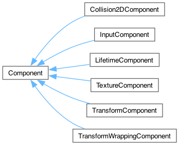
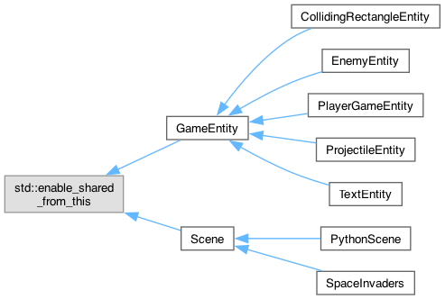

For my final project, I completed a basic implementation of the classic 1979 Atari game Asteroids in my custom engine ROSE. ROSE builds on the entity-component model we've been developing throughout this course.
Asteroids provides an interesting challenge in that the original game is implemented using vector graphics on a vector display. Such hardware is no longer commonplace; however, modern high-resolution displays and advances in computation power allow us to rasterize vector graphics in realtime with ease. As such, I decided to tackle the challenge of handling vector graphics for my "wow" factor.
To do this, I decided to rely on the extant SVG standard. I created a simple browser-based SVG editor tool that
allowed me to trace screenshots of the original game art, while making basic adjustments to the lines. I then
added support for basic SVG manipulation using Python's XML document parsing to transform the source SVG
according to the movement of the player. Finally, I modified SDL_Image's SVG rendering code (which itself
relies on nanosvg) to handle scaling properly when interfacing with Python. This provides me with
infinitely-scalable graphics (which you can adjust through the scaling parameter of config
.json).
|  |
|
|
|  |
Binary for the ROSE library is located in
release/.
Complete build instructions are in the README.md, as requested.
While I'm proud of what I accomplished, there were some significant cutbacks that had to be made to the scope of the game to get it done on time. Given additional time, here's what I'd work on, in order:
h2d::Homogr and SDL's AABB-based approach. For the
purposes of this game, I needed to calculate the intersections between the character and other entities,
even though the character isn't always axis-aligned. This necessitated the introduction of a more complex
2D geometry library. I opted for h2d, which has been pretty good so far. However, converting between
homographic transforms and the AABBs that SDL requires for rendering purposes has been painful. There's a
lot of poorly-written, slower-than-necessary conversions scattered around the C++ side that were
necessary to use many of SDL's functions. Given more time, I'd probably ditch most of SDL's non-core
functionality and only rely on it for rendering (maybe even just for primitive drawing, while writing my
own SVG renderer? IDK.) While I understand the performance advantages that SDL gets with its AABB-only
approach, it just results in too many issues for a game that requires this much rotation.